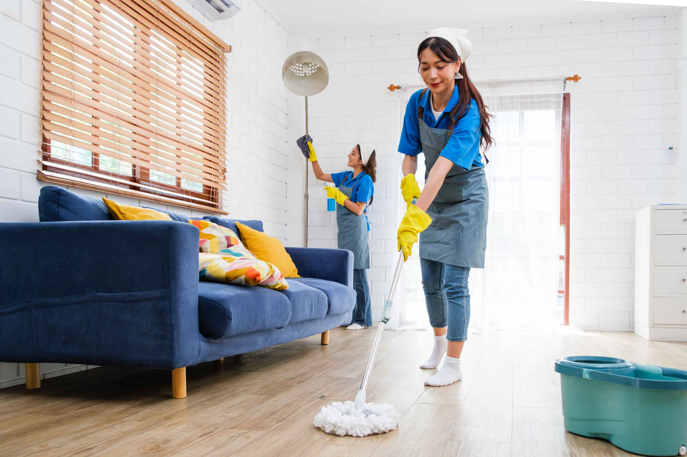
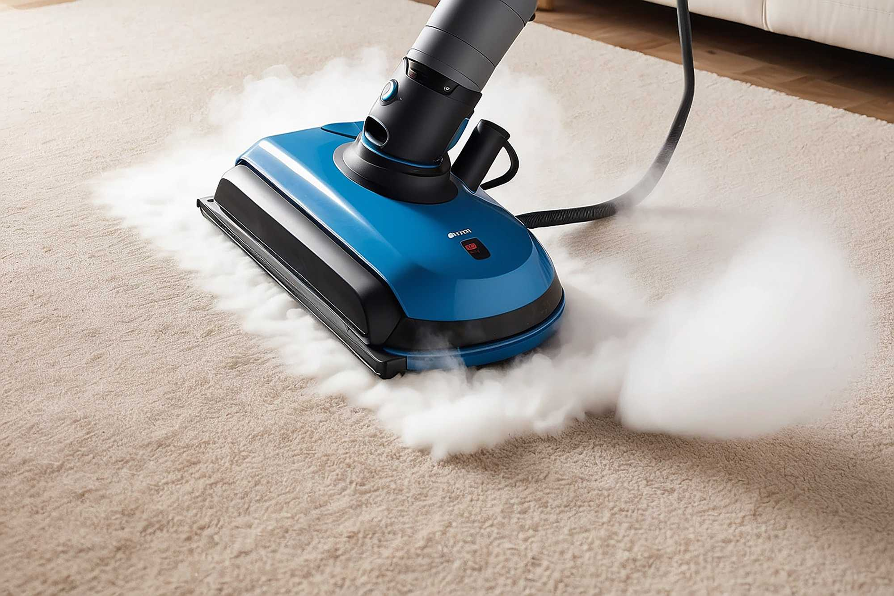
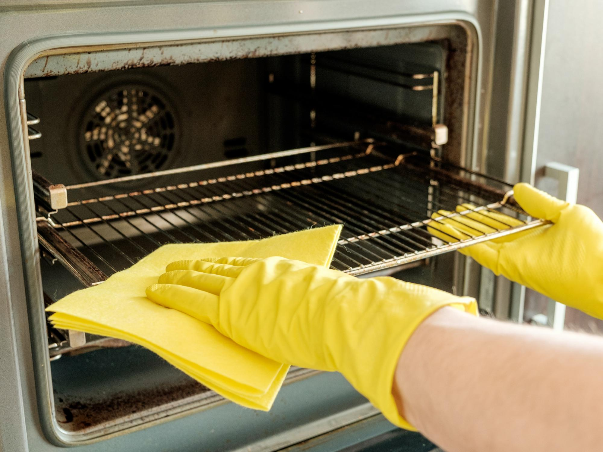
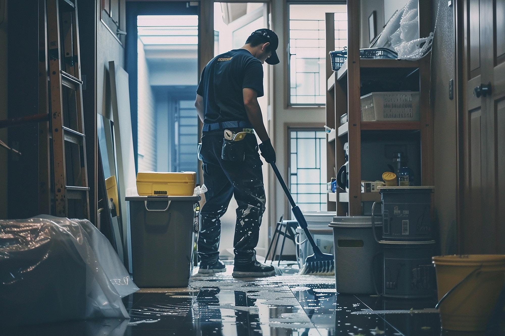

Our domestic cleaning service is designed to keep your home spotless and comfortable. Whether it’s a regular clean or a deep clean, we tackle every area of your home with precision and care. From kitchens and bathrooms to living rooms and bedrooms, we ensure that every corner is left sparkling.
We understand that every home is unique, which is why we customize our cleaning services to fit your specific needs. Our experienced team works around your schedule and focuses on the areas that matter most to you, providing a clean and healthy environment for your family.
We use eco-friendly cleaning products that are safe for your family and pets. Our commitment to green cleaning ensures your home is not only clean but also free of harsh chemicals, promoting a healthier living space for everyone. Let us take care of your cleaning needs with professionalism and care!

Our end of lease cleaning service ensures your property is spotless and ready for inspection. We handle everything from deep cleaning kitchens and bathrooms to scrubbing floors and washing windows. Our team pays special attention to the details that landlords and agents check, giving you peace of mind that you’ll leave the property in pristine condition.
We understand how important it is to leave the property in top shape to secure your bond. Our experienced cleaners follow a comprehensive checklist to meet all end-of-lease requirements, ensuring that every corner of the property is thoroughly cleaned and ready for the next tenant.
Moving is stressful, but we make the cleaning process hassle-free. With flexible scheduling and reliable service, we work around your move-out plans to ensure a smooth and timely transition. Let us take the worry out of end of lease cleaning, so you can focus on your new home.

Our carpet steam cleaning service is designed to remove dirt, stains, and allergens from deep within your carpets. Using advanced steam cleaning technology, we thoroughly clean and refresh carpets, restoring their original appearance and extending their lifespan.
We use eco-friendly cleaning solutions that are safe for your family, pets, and the environment. Our steam cleaning process is highly effective at eliminating bacteria, dust mites, and allergens, providing a cleaner and healthier indoor environment for your home or office.
Our team works efficiently to ensure minimal disruption to your day. With fast drying times and professional service, we leave your carpets looking and feeling like new, ensuring a fresh, revitalized space that you can enjoy right away.

At J Gill Cleaning Services, we provide professional couch cleaning services designed to restore the appearance, freshness, and comfort of your furniture. Over time, couches collect dust, dirt, allergens, food particles, and stains that regular vacuuming cannot fully remove. Our experienced team uses effective cleaning methods to deep clean your upholstery and help extend the life of your furniture.
We clean a wide range of fabric and upholstered couches, including lounges, sofas, recliners, sectionals, and armchairs. Before starting any job, we assess the fabric type and condition to determine the most suitable cleaning approach. This ensures a safe and thorough cleaning process without causing damage to delicate materials.
Our couch cleaning service targets stubborn stains, unpleasant odours, pet hair, and accumulated dirt trapped deep within the fabric. Using professional-grade equipment and eco-friendly cleaning solutions, we remove contaminants while helping to improve indoor air quality and create a healthier living environment for your family.

A dirty oven can affect cooking performance, create unpleasant smells, and become difficult to clean without professional assistance. At J Gill Cleaning Services, we offer comprehensive oven cleaning services that remove built-up grease, burnt food residue, carbon deposits, and stubborn stains, restoring your appliance to a clean and hygienic condition.
Our trained cleaners carefully dismantle removable components such as racks, trays, and panels to ensure every part of the oven receives a thorough clean. We use specialised cleaning products that effectively break down grease and grime without damaging surfaces or leaving harmful residues behind.
Regular oven cleaning not only improves hygiene but can also help maintain appliance efficiency and extend its lifespan. Our detailed cleaning process reaches areas that are often overlooked, including door glass, seals, corners, and internal surfaces where grease and debris commonly accumulate.

Clean windows can significantly enhance the appearance of your home or business while allowing more natural light to enter your property. J Gill Cleaning Services provides professional window cleaning solutions that remove dirt, dust, water spots, fingerprints, and environmental buildup from glass surfaces.
Our team cleans both interior and exterior windows using professional tools and proven techniques to achieve a streak-free finish. We pay close attention to details, ensuring that frames, tracks, and sills are also cleaned where required, providing a complete and polished result.
Over time, windows can accumulate grime that affects visibility and detracts from the overall look of a property. Regular professional cleaning helps preserve glass quality, improves curb appeal, and creates a brighter and more welcoming environment for residents, employees, and visitors.

Tiles can maintain their appearance for years, but grout lines often collect dirt, bacteria, mould, and stains that are difficult to remove with standard household cleaning methods. At J Gill Cleaning Services, we provide professional tile and grout cleaning services that restore the cleanliness and appearance of tiled surfaces.
Our advanced cleaning process penetrates deep into grout lines to remove embedded dirt and contaminants. Using specialised equipment and cleaning solutions, we effectively lift stains and grime while protecting the integrity of your tiles and grout. The result is a noticeably cleaner and fresher surface.
Tile and grout cleaning is ideal for kitchens, bathrooms, laundries, hallways, and commercial spaces where high foot traffic can lead to significant buildup over time. Regular professional maintenance not only improves appearance but also contributes to a healthier and more hygienic environment.

Construction and renovation projects often leave behind dust, debris, adhesive residues, paint splatters, and other materials that require specialised cleaning. J Gill Cleaning Services offers professional builder cleaning services to prepare newly built or renovated properties for occupancy, inspection, or handover.
Our builder cleaning process includes detailed cleaning of floors, walls, windows, fixtures, fittings, kitchens, bathrooms, and all accessible surfaces. We remove fine construction dust and leftover materials to ensure the property is presented in a clean, safe, and professional condition.
We work closely with builders, contractors, developers, and property owners to deliver efficient and reliable post-construction cleaning solutions. Our team understands the importance of meeting deadlines and maintaining high standards, ensuring every area is thoroughly cleaned and ready for use.